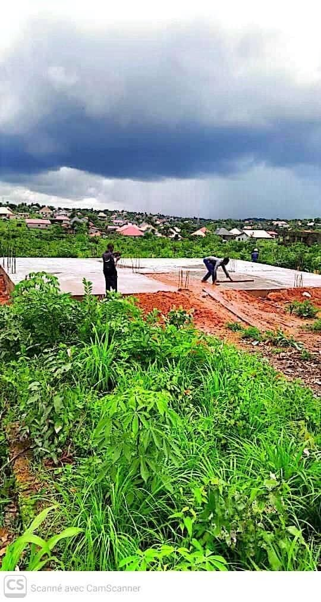
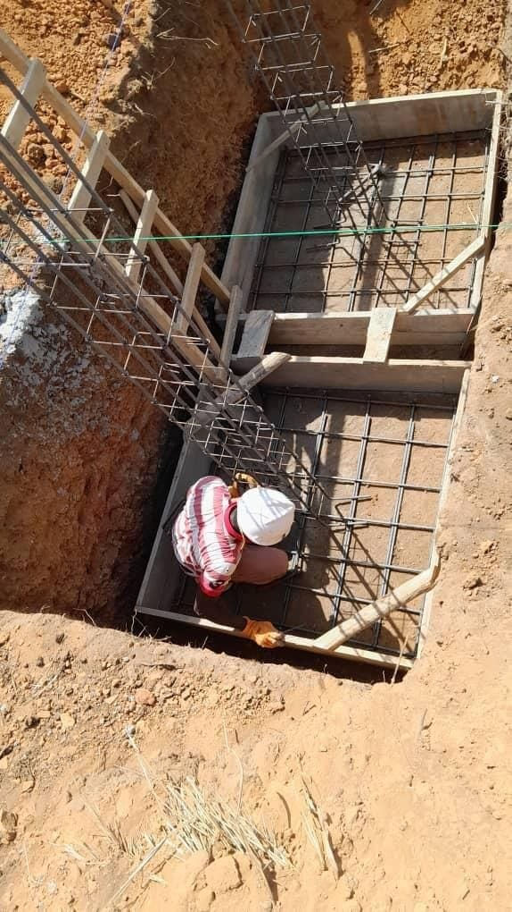
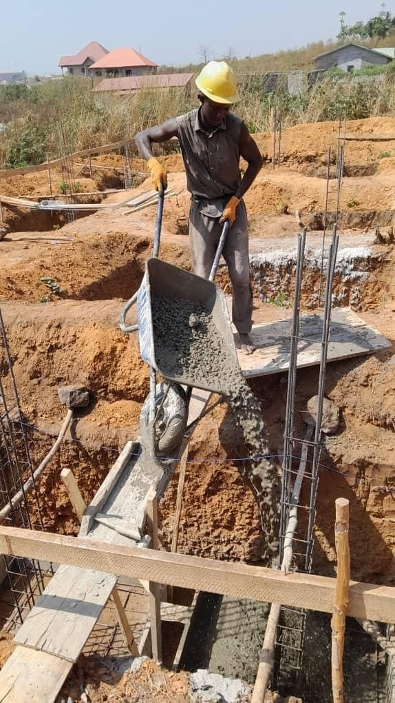

Nous construisons un orphelinat et une école pour offrir protection, éducation et dignité aux enfants qui en ont le plus besoin.
L'association Sini Nyessi est née d'une urgence : celle des enfants sans protection à Conakry. Notre réponse ne se limite pas à des mots, elle se traduit par des actes concrets et des fondations solides.
Au-delà de la construction d'un simple bâtiment, nous concevons un écosystème complet. Notre centre intégrera des logements sécurisés, un suivi nutritionnel quotidien, et un accès direct à l'éducation via notre école intégrée. Nous bâtissons un lieu où chaque enfant pourra se reconstruire et préparer son futur.
La transparence est au cœur de notre démarche. Voici les dernières avancées du chantier.



100% de vos dons financent les matériaux et la main-d'œuvre locale. Chaque contribution nous rapproche de l'ouverture des portes.
Soutenir financièrement